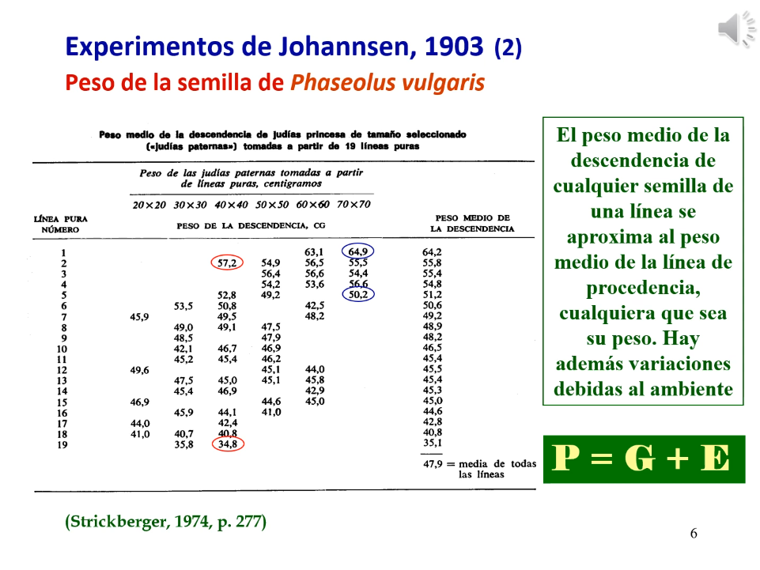
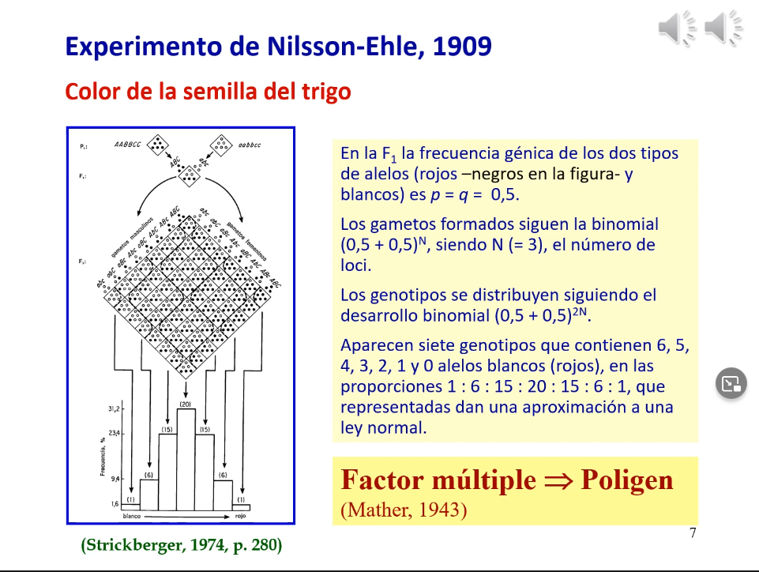

2. Caracteres Métricos
Enlace de la clase: https://youtu.be/zPNCYJ9baLc
Los caracteres pueden ser cualitativos (discontinuos) o cuantitativos (continuos, por lo general son complejos).
Existían dos posturas separadas en cuanto a la herencia genética:
- La mendeliana defendía que las diferencias hereditarias evolutivamente importantes son cualitativas y discontinuas y que las pequeñas variaciones se debían al ambiente
- La biométrica creía que la variación hereditaria es cuantitativa y continua.
# execute code if the date is later than a specified day
do_it = Sys.Date() > '2018-02-14'
Dos experimentos acercan ambas posturas.
- El experimento de Johannsen, fijó 19 líneeas por autofecundación que tenían un peso medio determinado y cruzó semillas del mismo peso pero de diferentes líneas.
|  |
|---|
| Figura 1. Experimento de Johannsen con semillas de guisante |
- El experimento de Nilsson-Ehle, cruzó dos líneas de trigo con granos blancos y rojos. El cruce dió lineas rosadas. Al cruzar de nuevo esta linea, resultaron semillas blancas, rojas, rosadas, rosadas más intensas... Al observar las frecuencias de los fenotipos, llegó a la conclusión de que este carácter estaba codificado por 3 genes que tenían una acción aditiva. Cada gen presentaba dos alelos: uno añadía pigmento blanco y otro pigmentación roja. La distribución del cruce de la F1 (heterocigota para todos los alelos) se acerca a una distribución normal, que es la esperada para los caracteres métricos. Esto venía a indicar que había un caracter métrico que era poligénico (factor múltiple)
|  |
|---|
| Figura 2. Experimento de Nilsson-Ehle con semillas de guisante |
Si en lugar de 3, tuviéramos más genes, el histograma seria aún más próximo a la normal (haya dominancia o aditividad). Esto se ve apoyado por el teorema central del límite que postula que cuando los valores observados de una variable son el resultado de un conjunto grande de causas independientes, siendo el efecto individual de poca importancia, es esperable que los valores sigan una distribución normal. Para los caracteres métricos, esto se cumple ya que estarían determinados por múltiples genes y por múltiples efectos ambientales.